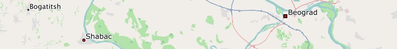

Belgium
English
Garmin GPS-device: (163 MB)Belgium - Install image for micro SD card
Microsoft Windows: (163 MB)
Apple Mac OS X: (163 MB)
Microsoft Windows: (163 MB)
Apple Mac OS X: (163 MB)
Microsoft Windows: (163 MB)
Apple Mac OS X: (163 MB)
Microsoft Windows: (318 MB)
Apple Mac OS X: (318 MB)
Microsoft Windows: (318 MB)
Apple Mac OS X: (318 MB)
Microsoft Windows: (667 MB)
Apple Mac OS X: (667 MB)
Microsoft Windows: (155 MB)
Apple Mac OS X: (155 MB)
Microsoft Windows: (155 MB)
Apple Mac OS X: (155 MB)
Microsoft Windows: (269 MB)
Apple Mac OS X: (269 MB)
Microsoft Windows: (672 MB)
Apple Mac OS X: (672 MB)
Microsoft Windows: (672 MB)
Apple Mac OS X: (672 MB)
Microsoft Windows: (27 MB)
Apple Mac OS X: (27 MB)
Microsoft Windows: (276 MB)
Apple Mac OS X: (276 MB)
Microsoft Windows: (276 MB)
Apple Mac OS X: (276 MB)
Microsoft Windows: (854 MB)
Apple Mac OS X: (854 MB)
Microsoft Windows: (854 MB)
Apple Mac OS X: (854 MB)
Microsoft Windows: (854 MB)
Apple Mac OS X: (854 MB)
Microsoft Windows: (579 MB)
Apple Mac OS X: (579 MB)
Microsoft Windows: (579 MB)
Apple Mac OS X: (579 MB)
Microsoft Windows: (115 MB)
Apple Mac OS X: (115 MB)
Microsoft Windows: (69 MB)
Apple Mac OS X: (69 MB)
Microsoft Windows: (193 MB)
Apple Mac OS X: (193 MB)
Microsoft Windows: (193 MB)
Apple Mac OS X: (193 MB)
Microsoft Windows: (91 MB)
Apple Mac OS X: (91 MB)
Microsoft Windows: (91 MB)
Apple Mac OS X: (91 MB)
Microsoft Windows: (105 MB)
Apple Mac OS X: (105 MB)
Microsoft Windows: (77 MB)
Apple Mac OS X: (77 MB)
Microsoft Windows: (64 MB)
Apple Mac OS X: (64 MB)
Microsoft Windows: (148 MB)
Apple Mac OS X: (148 MB)
Microsoft Windows: (148 MB)
Apple Mac OS X: (148 MB)
Microsoft Windows: (148 MB)
Apple Mac OS X: (148 MB)
Microsoft Windows: (236 MB)
Apple Mac OS X: (236 MB)

Microsoft Windows: (75 MB)
Apple Mac OS X: (75 MB)
Microsoft Windows: (102 MB)
Apple Mac OS X: (102 MB)
Microsoft Windows: (110 MB)
Apple Mac OS X: (110 MB)
Microsoft Windows: (613 MB)
Apple Mac OS X: (613 MB)
Microsoft Windows: (106 MB)
Apple Mac OS X: (106 MB)
Microsoft Windows: (60 MB)
Apple Mac OS X: (60 MB)
Microsoft Windows: (128 MB)
Apple Mac OS X: (128 MB)
Microsoft Windows: (4.9 MB)
Apple Mac OS X: (4.9 MB)
Microsoft Windows: (4.9 MB)
Apple Mac OS X: (4.9 MB)
We wish you lots of fun with the Freizeitkarte maps ... and many interesting trips.
Belgium - GMAP Install Archive (full) for Garmin BaseCamp
Belgium - GMAP Archive for Garmin BaseCamp
French
Garmin GPS-device: (163 MB)
Belgium - Install image for micro SD card
Belgium - GMAP Install Archive (full) for Garmin BaseCamp
Belgium - GMAP Archive for Garmin BaseCamp
Dutch
Garmin GPS-device: (163 MB)
Belgium - Install image for micro SD card
Belgium - GMAP Install Archive (full) for Garmin BaseCamp
Belgium - GMAP Archive for Garmin BaseCamp

Netherlands
English
Garmin GPS-device: (318 MB)
Netherlands - Install image for micro SD card
Netherlands - GMAP Install Archive (full) for Garmin BaseCamp
Netherlands - GMAP Archive for Garmin BaseCamp
Dutch
Garmin GPS-device: (318 MB)
Netherlands - Install image for micro SD card
Netherlands - GMAP Install Archive (full) for Garmin BaseCamp
Netherlands - GMAP Archive for Garmin BaseCamp

Great Britain
English
Garmin GPS-device: (667 MB)
Great Britain - Install image for micro SD card
Great Britain - GMAP Install Archive (full) for Garmin BaseCamp
Great Britain - GMAP Archive for Garmin BaseCamp
Denmark
German
Garmin GPS-device: (155 MB)
Denmark - Install image for micro SD card
Denmark - GMAP Install Archive (full) for Garmin BaseCamp
Denmark - GMAP Archive for Garmin BaseCamp
English
Garmin GPS-device: (155 MB)
Denmark - Install image for micro SD card
Denmark - GMAP Install Archive (full) for Garmin BaseCamp
Denmark - GMAP Archive for Garmin BaseCamp

Czech Republic
English
Garmin GPS-device: (269 MB)
Czech Republic - Install image for micro SD card
Czech Republic - GMAP Install Archive (full) for Garmin BaseCamp
Czech Republic - GMAP Archive for Garmin BaseCamp

Spain
German
Garmin GPS-device: (672 MB)
Spain - Install image for micro SD card
Spain - GMAP Install Archive (full) for Garmin BaseCamp
Spain - GMAP Archive for Garmin BaseCamp
English
Garmin GPS-device: (672 MB)
Spain - Install image for micro SD card
Spain - GMAP Install Archive (full) for Garmin BaseCamp
Spain - GMAP Archive for Garmin BaseCamp

Canary Islands
English
Garmin GPS-device: (27 MB)
Canary Islands - Install image for micro SD card
Canary Islands - GMAP Install Archive (full) for Garmin BaseCamp
Canary Islands - GMAP Archive for Garmin BaseCamp

Finland
German
Garmin GPS-device: (276 MB)
Finland - Install image for micro SD card
Finland - GMAP Install Archive (full) for Garmin BaseCamp
Finland - GMAP Archive for Garmin BaseCamp
English
Garmin GPS-device: (276 MB)
Finland - Install image for micro SD card
Finland - GMAP Install Archive (full) for Garmin BaseCamp
Finland - GMAP Archive for Garmin BaseCamp
Italy
German
Garmin GPS-device: (854 MB)
Italy - Install image for micro SD card
Italy - GMAP Install Archive (full) for Garmin BaseCamp
Italy - GMAP Archive for Garmin BaseCamp
English
Garmin GPS-device: (854 MB)
Italy - Install image for micro SD card
Italy - GMAP Install Archive (full) for Garmin BaseCamp
Italy - GMAP Archive for Garmin BaseCamp
Italian
Garmin GPS-device: (854 MB)
Italy - Install image for micro SD card
Italy - GMAP Install Archive (full) for Garmin BaseCamp
Italy - GMAP Archive for Garmin BaseCamp

Norway
German
Garmin GPS-device: (579 MB)
Norway - Install image for micro SD card
Norway - GMAP Install Archive (full) for Garmin BaseCamp
Norway - GMAP Archive for Garmin BaseCamp
English
Garmin GPS-device: (579 MB)
Norway - Install image for micro SD card
Norway - GMAP Install Archive (full) for Garmin BaseCamp
Norway - GMAP Archive for Garmin BaseCamp

Bulgaria
English
Garmin GPS-device: (115 MB)
Bulgaria - Install image for micro SD card
Bulgaria - GMAP Install Archive (full) for Garmin BaseCamp
Bulgaria - GMAP Archive for Garmin BaseCamp

Estonia
English
Garmin GPS-device: (69 MB)
Estonia - Install image for micro SD card
Estonia - GMAP Install Archive (full) for Garmin BaseCamp
Estonia - GMAP Archive for Garmin BaseCamp

Greece
German
Garmin GPS-device: (193 MB)
Greece - Install image for micro SD card
Greece - GMAP Install Archive (full) for Garmin BaseCamp
Greece - GMAP Archive for Garmin BaseCamp
English
Garmin GPS-device: (193 MB)
Greece - Install image for micro SD card
Greece - GMAP Install Archive (full) for Garmin BaseCamp
Greece - GMAP Archive for Garmin BaseCamp

Croatia
German
Garmin GPS-device: (91 MB)
Croatia - Install image for micro SD card
Croatia - GMAP Install Archive (full) for Garmin BaseCamp
Croatia - GMAP Archive for Garmin BaseCamp
English
Garmin GPS-device: (91 MB)
Croatia - Install image for micro SD card
Croatia - GMAP Install Archive (full) for Garmin BaseCamp
Croatia - GMAP Archive for Garmin BaseCamp
Hungary
English
Garmin GPS-device: (105 MB)
Hungary - Install image for micro SD card
Hungary - GMAP Install Archive (full) for Garmin BaseCamp
Hungary - GMAP Archive for Garmin BaseCamp

Lithuania
English
Garmin GPS-device: (77 MB)
Lithuania - Install image for micro SD card
Lithuania - GMAP Install Archive (full) for Garmin BaseCamp
Lithuania - GMAP Archive for Garmin BaseCamp

Latvia
English
Garmin GPS-device: (64 MB)
Latvia - Install image for micro SD card
Latvia - GMAP Install Archive (full) for Garmin BaseCamp
Latvia - GMAP Archive for Garmin BaseCamp

Portugal
German
Garmin GPS-device: (148 MB)
Portugal - Install image for micro SD card
Portugal - GMAP Install Archive (full) for Garmin BaseCamp
Portugal - GMAP Archive for Garmin BaseCamp
English
Garmin GPS-device: (148 MB)
Portugal - Install image for micro SD card
Portugal - GMAP Install Archive (full) for Garmin BaseCamp
Portugal - GMAP Archive for Garmin BaseCamp
Portuguese
Garmin GPS-device: (148 MB)
Portugal - Install image for micro SD card
Portugal - GMAP Install Archive (full) for Garmin BaseCamp
Portugal - GMAP Archive for Garmin BaseCamp

Romania
English
Garmin GPS-device: (236 MB)
Romania - Install image for micro SD card
Romania - GMAP Install Archive (full) for Garmin BaseCamp
Romania - GMAP Archive for Garmin BaseCamp
Serbia
English
Garmin GPS-device: (75 MB)
Serbia - Install image for micro SD card
Serbia - GMAP Install Archive (full) for Garmin BaseCamp
Serbia - GMAP Archive for Garmin BaseCamp

Slovakia
English
Garmin GPS-device: (102 MB)
Slovakia - Install image for micro SD card
Slovakia - GMAP Install Archive (full) for Garmin BaseCamp
Slovakia - GMAP Archive for Garmin BaseCamp
Slovenia
English
Garmin GPS-device: (110 MB)
Slovenia - Install image for micro SD card
Slovenia - GMAP Install Archive (full) for Garmin BaseCamp
Slovenia - GMAP Archive for Garmin BaseCamp

Turkey
English
Garmin GPS-device: (613 MB)
Turkey - Install image for micro SD card
Turkey - GMAP Install Archive (full) for Garmin BaseCamp
Turkey - GMAP Archive for Garmin BaseCamp
Ireland
English
Garmin GPS-device: (106 MB)
Ireland - Install image for micro SD card
Ireland - GMAP Install Archive (full) for Garmin BaseCamp
Ireland - GMAP Archive for Garmin BaseCamp

Iceland
English
Garmin GPS-device: (60 MB)
Iceland - Install image for micro SD card
Iceland - GMAP Install Archive (full) for Garmin BaseCamp
Iceland - GMAP Archive for Garmin BaseCamp

Belarus
Russian
Garmin GPS-device: (128 MB)
Belarus - Install image for micro SD card
Belarus - GMAP Install Archive (full) for Garmin BaseCamp
Belarus - GMAP Archive for Garmin BaseCamp

Azores
English
Garmin GPS-device: (4.9 MB)
Azores - Install image for micro SD card
Azores - GMAP Install Archive (full) for Garmin BaseCamp
Azores - GMAP Archive for Garmin BaseCamp
Portuguese
Garmin GPS-device: (4.9 MB)
Azores - Install image for micro SD card
Azores - GMAP Install Archive (full) for Garmin BaseCamp
Azores - GMAP Archive for Garmin BaseCamp